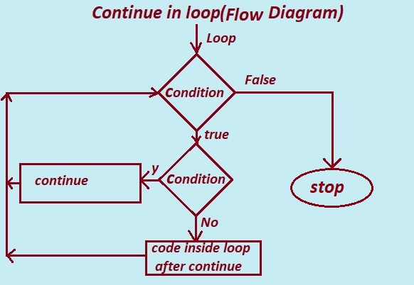
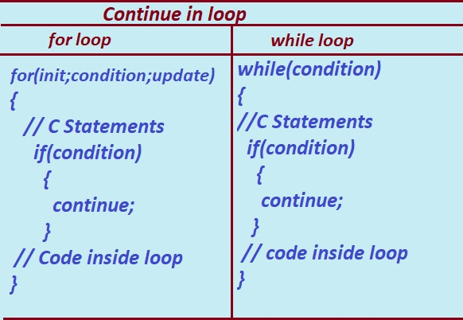

In this tutorial section we will learn what is continue statement in C Language?.
What is continue in C?
continue: The continue statement is used inside the looping statement in C.
When Continue is used inside the loops let say while loop,do..while loop and for loop the Continue statement passes programs control to the next iteration of the loop.
Or
The continue statement in C program passes execution control to the next iteration of the do , for , or while statement in which it appears.Continue statement skip any remaining statements in the do , for , or while statement body.
The continue statement is used when a programmer want to skip a particular statements inside the loop and continue the rest execution.
Continue is one of the keywords in C Language. Keywords in C Language are also known as reserved words that have a specific purpose. These keywords are not supposed to be used as variable names, function names etc. The main purpose of writing a continue statement in C code is to skip the current iteration of a loop.
Continue Statement in for loop in C Language
Advantage using continue in C programming Loops
1. The continue statement is used to end or skip current iteration in the loop and
continue to the next iteration.
2.It can be used in all kinds of loops in C programming.
i. while loop.
ii. do while loop.
iii. for loop.
2. Continue statement is used to optimize a loop by skipping or eliminating frequently occuring statement that programmer would like to reject .
3. Continue statement is used to avoid deeply nested conditional code .
Disadvantage using Continue in C programming
1. The use of continue statement in C program make code harder to understand and read.
2. In nested loop the use of continue statement will only skip the innermost loop and will be confusing.
3. The use of continue statement in C program make code harder to test and debug.

Given Diagram is the flowchart how continue works in loops.
The Given flow chart is the continue statement used inside a loops.
From the Given flow chart we can observe that when the continue statement is encountered inside a condition, the execution of code skips the The "code inside loop after continue " statement, and the next iteration of the loop begins till the loop condition is true. The loop condition continues till the condition of the loop is satisfied, and the program exit the loop when the condition becomes false.
Note: The code or statements below the continue statement only executes when the continue statement is not encountered inside the loop body.

1. Continue in for loop:
The working of the continue statement in for loop is as follows:
STEP 1: The Control enters in to the for loop.Control jumps to initilization section (init) of the loop and declare and initilize the local variable in the loop.
STEP 2: The Control Jumps to Condition Section and test the condition.
The loop’s execution starts after the loop condition is evaluated to be true.
STEP 3: The condition of the continue statement will be evaluated.
if(condition).
STEP 4a: If the condition is false, the normal execution will continue.
Executes the code // code inside loop
STEP 4b: If the condition is true, the program control will jump to the start of the loop and all the statements "// Code inside loop" below the continue will be skipped.
STEP 5: Steps 2 to 4 will repeats till the end of the loop.
2. Continue in while loop:
The working of the continue statement in while loop is as follows:
STEP 1: The Control enters in to the while loop and test the condition ,if the condition tested is true then the Control enters in to the while loops body.
STEP 2:
The loop’s execution starts after the loop condition is evaluated to be true.
STEP 3: The condition of the continue statement will be evaluated.
STEP 4a: If the condition is false( if(condition)),the continue statement won't be executed but executes the the statemennt "// Code inside loop".
STEP 4b: If the condition is true, the program control will jump to the start of the loop condition and all the statements "// Code inside loop" below the continue statement will be skipped.
STEP 5: Steps 1 to 4 will repeats till the end of the loop.
C program to illustrate use of continue in for loop
/* C program given below demonstrate the use of the continue statement in for loop */
#include <stdio.h>
int main()
{
int i;
for (i = 0; i < 10; i++)
{
if (i % 2 == 0)
{
continue;
}
printf("%d, ", i);
}
return 0;
}
Output:
1 3 5 7 9
Explanation : The program above displays all odd number between the range 1 to 10.
Step 1: int i;
The variable i is declared as integer to store integer numbers.
Step 2: The control enters into the for loop.
for (i = 1; i < 10; i++)
{
if (i % 2 == 0)
{
continue;
}
printf("%d, ", i);
}
2.1 : intilize the variable i to 1 in intilization section of for loop. .i.e i=1
2.2 : control jumps to test the condition in the condition section , i<10 the condition tested is true i.e. 1<10 results in true.
2.3 : control enters inside the for loop body and start executing statement
if (i % 2 == 0)
{
continue;
}
printf("%d, ", i);
}
if the condition tested if(i%2==0) evaluates true the flow continues to next iteration of the loop by skipping the printf("%d",i); statement.
Step 3: The process continue till the value of i<10, as soon as the value of i becomes 10 the execution of the loop terminates and stops the execution.
And finally shows the final output.
C program to illustrate use of continue in while loop
/* C program given below demonstrate the use of the continue statement in while loop */
#include <stdio.h>
int main()
{
int count = 5;
while (count >= 0)
{
if (count == 2)
{
count--;
// Skip printing count if it is equal to 2.
continue;
}
printf("%d ", count);
count--;
}
return 0;
}
Output:
5 4 3 1 0
The program above displays number in reverse order between range 1 to 5 except 2.
Explanation :
i. int count = 5;
The variable counter count is declared as int variable and assigned value 5. i.e count=5.
ii. control enters in to the while loop.
while (count >= 0)
test the condition expression which true (while(5>=0)) then control enters into the while loop body.
iii. And executes
if (count == 2)
{
count--;
// Skip printing count if it is equal to 2.
continue;
}
Here condition if(count==2) tested is false( if(5==2)) so statements inside if dose not execute.
And start executing the rest of statement inside body of loop i.e.
iv.printf("%d ", count);
count--;
displays the value of count i.e. 5 on the output screen and decrement(count--) the value of count by 1 then count becomes 4 , count=4.
This process continues till the value of count=3.
when the value of count becomes 2 (count=2)then
the statement
if (count == 2)
{
count--;
// Skip printing count if it is equal to 2.
continue;
}
executes.
the if(count==2) is true (if(2==2)) then the value of count decremented by 1(count--)
the continue statement skip the statements inside loop and continue to next iteration.
v. control jumps back to while loop and test the condition while(count>=0) , which is again true (while(1>=1)).
control enters in the while loop body and if statement , shows output 1.
the process continues till the value of i>=0.
Previous Topic:-->> Infinite for loop in C || Next topic:-->>break inside loop in C.